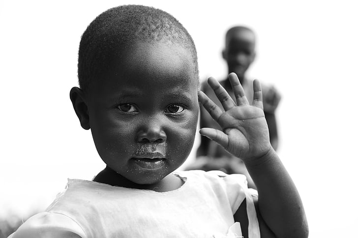

O QUE É CONFIB?
A CONFIB (Confederação Internacional do Bem) é uma entidade não governamental sem fins lucrativos , focada em ações sociais em qualquer lugar do mundo, embasados em valores e princípios cristãos. Seus fundadores e idealizados são o empresário Paulo Sergio de Carvalho Barbosa e a pedagoga Amanda Kizzy da Silva Lima.
Seja um parceiro colaborador! Saiba como se integrar aos diferentes projetos, quer seja como apoiador, voluntário, doador ou de qualquer outra forma! Saiba mais por meio dos nossos canais de comunicação.
NOSSO CONTATO
Rua dos Girassóis - 8 - Parque Sinai - Santana de Parnaíba - SP - CEP. 06532-330
Email: grupostarfit@gmail.com
Whatsapp +55 (11) 97508-9942
NOSSOS PROJETOS
Projeto Moçambique - África
Este projeto está em andamento desde setembro de 2022 e consiste em fornecer alimentação mensal para 60 crianças órfãos que estão sob os cuidados locais do Pastor José Semente na região do município da Vila Nhamatanda (Província de Sefala), que é uma das regiões mais pobres do continente Africano. Moçambique é um dos 10 países mais pobres do planeta, sendo que 10% da população está infectada por AIDS.
A COMFIB objetiva conseguir colaboradores para manter este projeto, sendo que cada criança para se alimentar por 30 dias gasta apenas R$ 60,00, ou seja, para sustentar por 30 dias as 60 crianças precisamos arrecadar mensalmente a importância de R$ 3.600,00.
Buscamos a ajuda de empresas e pessoas físicas que queiram manter este projeto. A moeda local de Moçambique (Mitical) vale cerca de 10 vezes a menos que a moeda Real (Brasil). A COMFIB faz remessas mensais de recursos para a África para manter este projeto.
PROJETO SUSTENTÁVEL - GÓSPEL FIGHT (TRÍPLICE AÇÃO)

Este projeto funciona criando uma triangulação, recolhendo da indústria descartes de tecidos que iriam ser remetidos na natureza (evitando-se a poluição ambiental) e, tais materiais são utilizados no enchimento de sacos de pancadas fabricados pelo Grupo Star Fit e, consequentemente, estes equipamentos desportivos são doados a projetos sociais que fazem atividades esportivas com modalidades de lutas, as quais atuam também dentro de uma filosofia cristã de valores e princípios.
Logo, o Projeto Gospel Fight é ecológico (evita a poluição ambiental), promove a prática desportiva com a inclusão e sociabiliza seus participantes, além de promove a difusão de valores cristãos entre jovens e adultos participantes de tais núcleos desportivos.
Um dos principais parceiros do projeto Gospel Fight é o Professor Hallyson Lessa, de Brasília, coordenador do projeto "Jiu Jitsu Para Cristo". As doações direcionadas a este projeto são utilizadas para a confecção de mais sacos de pancadas e outros equipamentos desportivos para serem doados aos projetos desportivos que possuem sinergia com esta missão.
PROJETO EDUCACIONAL PARA AUTISTAS E PORTADORES DE SÍNDROME DE DOWN
Este projeto encontra-se em estudo e formatação, porém já possui como diretriz produzir um ambiente adequado para educação diferenciada e especializada para portadores de síndrome de Down e Autistas de todas as idades.

A pedagoga Amanda Kizzy é coordenadora deste projeto e está promovendo estudos especializados para inaugurar o centro especializado em região próxima a Santana de Parnaíba. Uma das metas é criar um ambiente multifuncional e de grande estímulo aos alunos com o objetivo de se obter um rendimento pedagógico superior ao das escolas não especializadas.
Pessoas interessadas neste assunto podem entrar em contato com a direção da COMFIB para maiores detalhes. Este projeto espera reunir colaboradores para todas as frentes, para que possa ser estendido ao maior número possível de alunos nas condições especiais citadas.